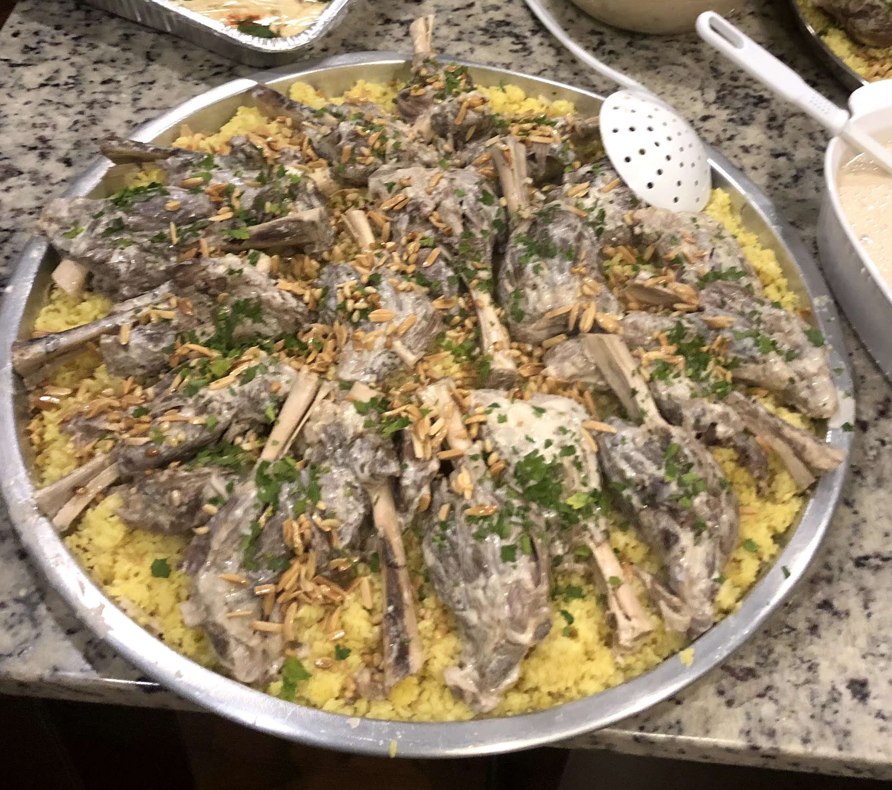
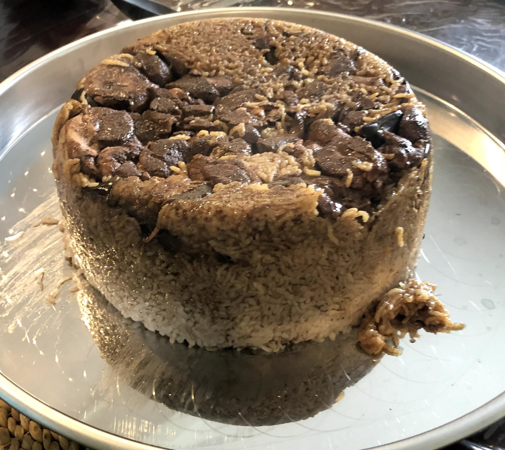
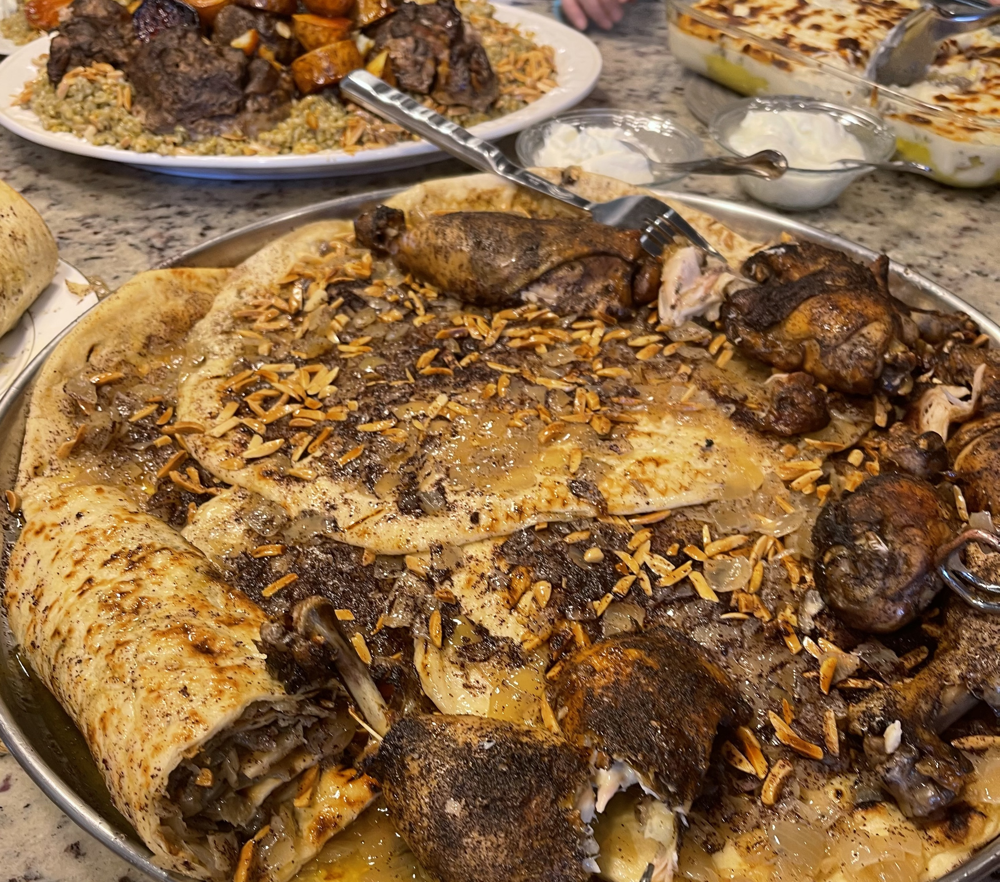

Dinner Recipes:
Mansaf

Ingredients:
- 2 pounds of lean lamb
- Salt
- Pepper
- 4 cups of jameed (Middle Eastern yogurt)
- Parsley
- 1 Onion, finely chopped
- 1/2 cup of almonds
- Pine nuts
- 4-6 loaves of shrak (thin pita bread)
- 3 cups of short or medium grain rice
- 2 tablespoons of ghee (clarified butter)
Directions:
- Place the lamb in pot on medium heat
- Add pepper and chopped onions
- Simmer until lamb is brown
- Drain the pot, then add water until lamb is completely submerged
- Cover pot and cook for 2 1/2 hours
- Place the jameed in a sauce pan with a pinch of salt and a teaspoon of olive oil and consistently
whisk over medium heat until boiling
- Lower the heat of the saucepan and add the cooked lamb and 1/4 cup of lamb broth to the sauce pan
- Simmer for 15 minutes and adjust salt to taste
- In a skillet add ghee, almonds, and pine nuts and cook until almonds and pine nuts are golden
- Cut the bread into 3 inch pieces
- Cover your serving tray with the bread
- In a boiling pot of water, cook the rice
- Lightly place some of the yogurt mix on the bread in the serving tray
- Cover the bread with a generous layer of rice
- Place the lamb on top of the rice
- Add pine nuts and almonds
- Add parsley for garnsih
- Enjoy!
Maqluba

Ingredients:
- 1 whole chicken cut into 6 pieces
- 1 onion cut into 4 pieces
- 1 teaspoon of black pepper
- Salt
- 1 teaspoon of cinnamon powder
- 2 tablespoon of allspice
- 1 tablespoon of Middle Eastern seven-spice
- 1 teaspoonof turmeric
- 2 eggplants, sliced
- 1 large cauliflower, cut into florets
- 3 cups of medium grain rice
Directions:
- Deep fry vegetables in vegetable oil
- Place the chicken in a pot with the onions
- Simmer pot on the stove for a few minutes
- Add all of the spices to the pot and add water until the chicken is submerged
- Keep pot on medium heat until chicken is completely cooked
- Drain the pot, but save the broth
- Place the rice in a large pot
- Add all of the spices from before to the rice
- Put the chicken on top of the rice
- Put the eggplant and cauliflower on top of the chicken
- Add another layer of rice on top of the chicken
- Add broth until it is 1 inch above the rice, add salt on top
- Cover the pot and place it on high heat until it is boiling
- Lower the heat to low and leave pot for about 20 minutes or until the liquid is evaporated and the
rice is cooked
- Flip the pot, open side facing down, on to a large serving tray
- Using your hands smack on the top and sides of the pot
- Slowly lift the pot without turning it
- Enjoy!
Msakhan

Ingredients:
- 4 medium onions, coarsely chopped
- 4 quarter chicken legs
- 1 tablespoon of allspice
- 1 cup of sumac spice
- 1/2 cup of olive oil
- 1/4 cup of pine nuts
- 4 large taboon bread
Directions:
- Preheat the oven to 400° F
- Season the chicken with allspice, salt, and sumac
- Add olive oil and chopped onions and place chicken in the oven for 30-45 minutes or until chicken is
cooked
- Put the chopped onions and olive oil in a pan
- Add salt to the pan and cook until the onions are soft and tender, then add sumac at the end
- Brush the face of the breads with oil from the onion pan
- Place the onions, a sprinkle of sumac, and the pine nuts on the face of the breads as well
- Place the chicken over the breads
- Enjoy!